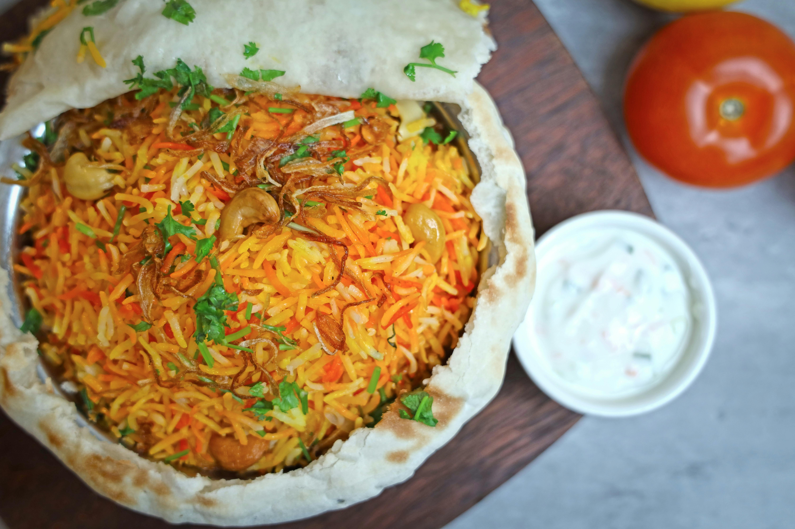

Pilau Recipe

Ingredients
Pilau Masala (Pilau spices)
- 1 tsp cloves
- 2 tbs cumin seeds
- ½ black peppercorn seeds
- 12 pods cardamon
- 1 stick cinammon
Rice Pilau
- 2 cups basmati rice
- ¼ cup vegetable oil
- 2 red onions medium size, thinly sliced
- 4 garlic cloves, minced
- 2 tbs ginger, minced
- 1 serrano chili, finely chopped
- 1 tbs pilau masala
- 2 beef stock cubes
- ¼ cup fresh cilantro, roughly chopped
- 1 lb beef sirloin, cubed
- 4 cups beef stock
- 2 bay leaves
- Salt to taste
Instructions
Make the pilau masala:
- Place the cumin, black peppers, cinnamon, cardamom and cloves in a dry pan.
- Roast over low heat until warmed through and fragrant and blend (I used a coffee grinder) until smooth.
- You need just 1 to 1½ tablespoons for this recipe (depending on how fragrant you want the rice to be). Feel free to store the leftover spice powder in an airtight container for up to 3 months, or refrigerate for up to 6 months.
Make the rice pilau
- Heat a stockpot on medium-high heat. Add oil and heat until hot but not smoking.
- Add the sliced onions and fry for 10-15 minutes or till the onions starts to turn golden brown (be careful not to burn it).
- Add the garlic, ginger, serrano pepper, Cook for 1-2 minutes, until fragrant.
- Add the cubed beef, pilau masala, beef stock cubes, bay leaves, cilantro, and salt to taste. Cook until the meat browns and caramelizes stirring occasionally about 8 to 10 minutes.
- Add the diced tomatoes and cook for 4-5 minutes, until the tomatoes have released their liquid.
- Stir in the beef stock. Bring to a boil and cook for 10 minutes.
- Stir in the rice, and cover tightly with a foil paper (to keep the steam in) if necessary. Reduce the heat to low and cook for 20 minutes, until the rice is cooked and the liquid is absorbed.
- Once the rice is dry, remove the foil paper and fluff with a fork to ensure the seasonings are well distributed all around the rice.
- Serve hot with fresh kachumbari (salsa). Enjoy!